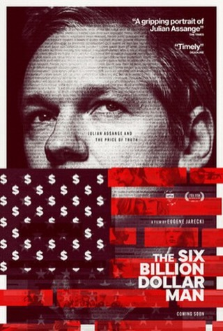

The Six Billion Dollar Man
Directed by Eugene Jarecki
United States, Germany, France · 2025 · 126 min
About the film

Eugene Jarecki's deep dive into WikiLeaks founder Julian Assange is a gripping, high-tech thriller and authoritative chronicle of an extraordinary saga—a portrait of a controversial visionary whose pursuit of truth reverberated worldwide. Assange's journey from idealistic hacker to embattled publisher lays bare the new fractures that define the digital age: the tension between government secrecy and the public's right to know, and the perils faced by truth-tellers at the intersection of power, technology, and journalism.
By tracing Assange's path through legal battles, diplomatic standoffs, and the weaponization of information, the film illuminates how rapidly shifting ground—political, technological, and ethical—has redrawn the boundaries of accountability and press freedom. In a world where state and corporate interests increasingly shape the flow of information, Jarecki's storytelling skillfully exposes the hidden rifts that influence democracy itself.
At the festival
- 2025 Opening Night · U.S. Premiere · Thursday, October 30, 2025 · 7:00 PM · The Avalon TheaterScreening followed by audience talkback with director Eugene Jarecki, moderated by Ellen Nakashima of The Washington Post.
Sessions about this film
- 2025 · Thu Oct 30 · 1:00 PMPanel · DX²Fog of Falsehood: Disinformation, AI, and the Battle Over RealityGaia de Simoni, Eugene Jarecki, Ben Loeterman, Nick Quested, Kate Stonehill, Zach Toombs
- 2025 · Fri Oct 31 · 9:30 AMConversation · DX²Echoes from the Embassy: A Conversation with Eugene JareckiEugene Jarecki, Diana Jean Schemo
More films on these topics
- Short Strand: Close to HomeMarie-Josée Desharnais, Alexandra Catherine Genova, Arjun Fischer2026
 PoisonedJoy Ash2025 · 90 min
PoisonedJoy Ash2025 · 90 min Ask E. JeanIvy Meeropol2025 · 91 min
Ask E. JeanIvy Meeropol2025 · 91 min Trade SecretAbraham Joffe2025 · 98 min
Trade SecretAbraham Joffe2025 · 98 min The Black SwanMads Brügger2025 · 90 min
The Black SwanMads Brügger2025 · 90 min Cover-UpLaura Poitras, Mark Obenhaus2025 · 117 min
Cover-UpLaura Poitras, Mark Obenhaus2025 · 117 min